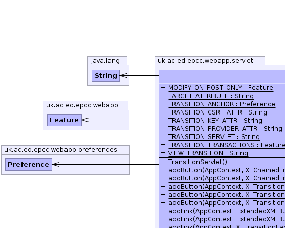
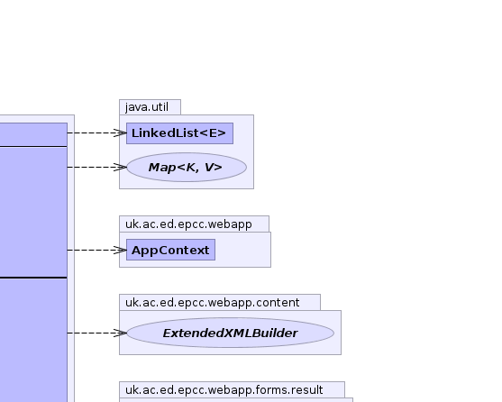
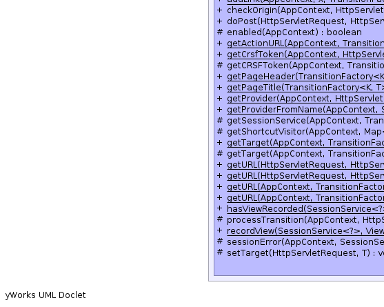

- java.lang.Object
-
- javax.servlet.GenericServlet
-
- javax.servlet.http.HttpServlet
-
- uk.ac.ed.epcc.webapp.servlet.WebappServlet
-
- uk.ac.ed.epcc.webapp.servlet.TransitionServlet<K,T>
-
- Type Parameters:
K- key typeT- Target type
- All Implemented Interfaces:
- java.io.Serializable, javax.servlet.Servlet, javax.servlet.ServletConfig
@WebServlet(name="TransitionServlet", urlPatterns="/TransitionServlet/*") public class TransitionServlet<K,T> extends WebappServletServlet to do generic transitions. This is a central access point for transitions on servlets. TheTransitionFactoryand Target are encoded in the servlet path to give them a unique URL. Optionally other parameters like the transition-key may also be encoded there. This allows jsp pages invoked by forward to have the same URL as their target so they can omit the action attribute. This is particularly useful when using aPathTransitionProviderTransitions do their own access control so this only extendsSessionServlet- Author:
- spb
- See Also:
- Serialized Form
-
 
  

-
-
Nested Class Summary
Nested Classes Modifier and Type Class and Description static classTransitionServlet.GetIDVisitor<T,K>static classTransitionServlet.GetTargetVisitor<T,K>
-
Field Summary
Fields Modifier and Type Field and Description static java.lang.StringTARGET_ATTRIBUTEstatic java.lang.StringTRANSITION_KEY_ATTRstatic java.lang.StringTRANSITION_PROVIDER_ATTRstatic java.lang.StringTRANSITION_SERVLETstatic FeatureTRANSITION_TRANSACTIONSstatic java.lang.StringVIEW_TRANSITION-
Fields inherited from class uk.ac.ed.epcc.webapp.servlet.WebappServlet
ARGS, CONFIRM_NO, CONFIRM_POST_URL, CONFIRM_TYPE, CONFIRM_YES, EXTRA_HTML, MESSAGE_EXTRA_ATTR, MESSAGE_TYPE_ATTR, MESSAGES_JSP_URL, SCRIPTS_CONFIRM_JSP
-
-
Constructor Summary
Constructors Constructor and Description TransitionServlet()
-
Method Summary
Methods Modifier and Type Method and Description static <A,B,X extends ExtendedXMLBuilder>
XaddButton(AppContext c, X hb, ChainedTransitionResult<B,A> next, java.lang.String text)static <A,B,X extends ExtendedXMLBuilder>
XaddButton(AppContext c, X hb, ChainedTransitionResult<B,A> next, java.lang.String text, java.lang.String title)static <A,B,X extends ExtendedXMLBuilder>
XaddButton(AppContext c, X hb, TransitionFactory<A,B> tp, A operation, B target, java.lang.String text)Add a button to perform the required operation on the targetstatic <A,B,X extends ExtendedXMLBuilder>
XaddButton(AppContext c, X hb, TransitionFactory<A,B> tp, A operation, B target, java.lang.String text, java.lang.String title)static ExtendedXMLBuilderaddLink(AppContext c, ExtendedXMLBuilder hb, ChainedTransitionResult next, java.lang.String text)static ExtendedXMLBuilderaddLink(AppContext c, ExtendedXMLBuilder hb, ChainedTransitionResult next, java.lang.String text, java.lang.String hover)static <A,B,X extends ExtendedXMLBuilder>
XaddLink(AppContext c, X hb, TransitionFactory<A,B> tp, A operation, B target, java.lang.String text, java.lang.String hover)Add a link to perform the required operation on the targetvoiddoPost(javax.servlet.http.HttpServletRequest req, javax.servlet.http.HttpServletResponse res, AppContext conn)Method that does the actual workstatic TransitionFactorygetProvider(AppContext conn, javax.servlet.http.HttpServletRequest req)Static method for jsp pages to retrieve the TransitionProvider in a way compatible with the TransitionSerlvetstatic TransitionFactorygetProviderFromName(AppContext conn, java.lang.String type)method to retrieve the TransitionProvider from a string tag If the tag contains a colon this is taken as a separator between two fields.protected SessionServicegetSessionService(AppContext conn, java.util.Map<java.lang.String,java.lang.Object> raw_params)Extension point to get the session including any custom login code based on the parameters.protected TransitionVisitor<T>getShortcutVisitor(AppContext conn, java.util.Map<java.lang.String,java.lang.Object> params, TransitionFactory<K,T> tp, T target, K key)static <A,B> BgetTarget(AppContext conn, TransitionFactory<A,B> provider, javax.servlet.http.HttpServletRequest req)Static method for jsp pages to use to retieve the target in a way compatible with the TransitionServletprotected TgetTarget(AppContext conn, TransitionFactory<K,T> provider, java.util.LinkedList<java.lang.String> path)Extracts the Target form the URL and sets it as an attribute for any scripts we forward to.static <A,B> java.lang.StringgetURL(AppContext conn, TransitionFactory<A,B> tp, B target)Get the TransitionServlet URL for a given TransitionProvider and target.static <A,B> java.lang.StringgetURL(AppContext conn, TransitionFactory<A,B> tp, B target, A operation)static <A,B> java.lang.StringgetURL(javax.servlet.http.HttpServletRequest req, javax.servlet.http.HttpServletResponse res, AppContext conn, TransitionFactory<A,B> tp, B target)static <A,B> java.lang.StringgetURL(javax.servlet.http.HttpServletRequest req, javax.servlet.http.HttpServletResponse res, AppContext conn, TransitionFactory<A,B> tp, B target, A operation)static <T,K> booleanhasViewRecorded(SessionService<?> sess, ViewTransitionFactory<K,T> tp)protected FormResultprocessTransition(AppContext conn, javax.servlet.http.HttpServletRequest req, java.util.Map<java.lang.String,java.lang.Object> params, TransitionFactory<K,T> tp, K key, T target, Transition<T> t)static <T,K> voidrecordView(SessionService<?> sess, ViewTransitionFactory<K,T> tp, T target)Register the most recent view transition for this provider for use by theBackResultpassing a null target clears the memory.protected voidsessionError(AppContext conn, SessionService sess, javax.servlet.http.HttpServletRequest req, javax.servlet.http.HttpServletResponse res)Extension point for missing authorisationprotected voidsetTarget(javax.servlet.http.HttpServletRequest req, T q)-
Methods inherited from class uk.ac.ed.epcc.webapp.servlet.WebappServlet
confirm, confirm, doGet, doPost, doPut, doPut, encodeCGI, getLogger, handleFormResult, message, message, messageWithArgs
-
Methods inherited from class javax.servlet.http.HttpServlet
doDelete, doHead, doOptions, doTrace, getLastModified, service, service
-
-
-
-
Field Detail
-
VIEW_TRANSITION
public static final java.lang.String VIEW_TRANSITION
- See Also:
- Constant Field Values
-
TRANSITION_TRANSACTIONS
public static final Feature TRANSITION_TRANSACTIONS
-
TRANSITION_SERVLET
public static final java.lang.String TRANSITION_SERVLET
- See Also:
- Constant Field Values
-
TRANSITION_PROVIDER_ATTR
public static final java.lang.String TRANSITION_PROVIDER_ATTR
- See Also:
- Constant Field Values
-
TRANSITION_KEY_ATTR
public static final java.lang.String TRANSITION_KEY_ATTR
- See Also:
- Constant Field Values
-
TARGET_ATTRIBUTE
public static final java.lang.String TARGET_ATTRIBUTE
- See Also:
- Constant Field Values
-
-
Method Detail
-
doPost
public void doPost(javax.servlet.http.HttpServletRequest req, javax.servlet.http.HttpServletResponse res, AppContext conn)Description copied from class:WebappServletMethod that does the actual work- Specified by:
doPostin classWebappServlet
-
getShortcutVisitor
protected TransitionVisitor<T> getShortcutVisitor(AppContext conn, java.util.Map<java.lang.String,java.lang.Object> params, TransitionFactory<K,T> tp, T target, K key)
-
sessionError
protected void sessionError(AppContext conn, SessionService sess, javax.servlet.http.HttpServletRequest req, javax.servlet.http.HttpServletResponse res) throws java.io.IOException, javax.servlet.ServletException
Extension point for missing authorisation- Throws:
java.io.IOExceptionjavax.servlet.ServletException- Parameters:
conn-sess-req-res-
-
processTransition
protected FormResult processTransition(AppContext conn, javax.servlet.http.HttpServletRequest req, java.util.Map<java.lang.String,java.lang.Object> params, TransitionFactory<K,T> tp, K key, T target, Transition<T> t) throws TransitionException
- Throws:
TransitionException
-
getSessionService
protected SessionService getSessionService(AppContext conn, java.util.Map<java.lang.String,java.lang.Object> raw_params)
Extension point to get the session including any custom login code based on the parameters. This allows sub-classes to that parse the parameters for login credentials- Parameters:
conn-- Returns:
-
getProviderFromName
public static TransitionFactory getProviderFromName(AppContext conn, java.lang.String type)
method to retrieve the TransitionProvider from a string tag If the tag contains a colon this is taken as a separator between two fields. The first field is used to construct aTransitionFactoryCreatorusingAppContext.makeObject(Class, String)and the second field is used as the parameter toTransitionFactoryCreator.getTransitionProvider(String). otherwise calls toAppContext.makeObject(Class, String)are attempted with the following tag/type parameters- TransitionProvider.
TransitionFactory.- TargetName looking for
TransitionFactory- TargetName looking for
TransitionFactoryCreator - TargetName looking for
- Parameters:
conn-type- TargetName of the TransitionProvider- Returns:
TransitionFactory
- TransitionProvider.
-
getProvider
public static TransitionFactory getProvider(AppContext conn, javax.servlet.http.HttpServletRequest req) throws java.lang.Exception
Static method for jsp pages to retrieve the TransitionProvider in a way compatible with the TransitionSerlvet- Throws:
java.lang.Exception- Parameters:
conn-req-- Returns:
- TransitionProvider
-
getTarget
protected T getTarget(AppContext conn, TransitionFactory<K,T> provider, java.util.LinkedList<java.lang.String> path)
Extracts the Target form the URL and sets it as an attribute for any scripts we forward to.- Parameters:
conn-provider-path-req-- Returns:
-
getTarget
public static <A,B> B getTarget(AppContext conn, TransitionFactory<A,B> provider, javax.servlet.http.HttpServletRequest req)
Static method for jsp pages to use to retieve the target in a way compatible with the TransitionServlet- Type Parameters:
A-B-- Parameters:
conn-provider-req-- Returns:
- Transition target
-
setTarget
protected void setTarget(javax.servlet.http.HttpServletRequest req, T q)
-
addButton
public static <A,B,X extends ExtendedXMLBuilder> X addButton(AppContext c, X hb, TransitionFactory<A,B> tp, A operation, B target, java.lang.String text)
Add a button to perform the required operation on the target- Type Parameters:
A-B-- Parameters:
c-hb- HtmlBulder to modifytp- TransitionProvideroperation-target-text-- Returns:
- modified HtmlBuilder
-
addButton
public static <A,B,X extends ExtendedXMLBuilder> X addButton(AppContext c, X hb, TransitionFactory<A,B> tp, A operation, B target, java.lang.String text, java.lang.String title)
-
addButton
public static <A,B,X extends ExtendedXMLBuilder> X addButton(AppContext c, X hb, ChainedTransitionResult<B,A> next, java.lang.String text)
-
addButton
public static <A,B,X extends ExtendedXMLBuilder> X addButton(AppContext c, X hb, ChainedTransitionResult<B,A> next, java.lang.String text, java.lang.String title)
-
addLink
public static <A,B,X extends ExtendedXMLBuilder> X addLink(AppContext c, X hb, TransitionFactory<A,B> tp, A operation, B target, java.lang.String text, java.lang.String hover)
Add a link to perform the required operation on the target- Type Parameters:
A-B-- Parameters:
c-hb- HtmlBulder to modifytp- TransitionProvideroperation-target-text-- Returns:
- modified HtmlBuilder
-
addLink
public static ExtendedXMLBuilder addLink(AppContext c, ExtendedXMLBuilder hb, ChainedTransitionResult next, java.lang.String text)
-
addLink
public static ExtendedXMLBuilder addLink(AppContext c, ExtendedXMLBuilder hb, ChainedTransitionResult next, java.lang.String text, java.lang.String hover)
-
getURL
public static <A,B> java.lang.String getURL(AppContext conn, TransitionFactory<A,B> tp, B target)
Get the TransitionServlet URL for a given TransitionProvider and target. If the TransitionProvider implements ViewTransitionProvider this will be the view URL of the target. A page invoked by forward is already at this URL and need not provide an action attribute to forms.- Type Parameters:
A-B-- Parameters:
conn-tp-target-- Returns:
- String URL
-
getURL
public static <A,B> java.lang.String getURL(javax.servlet.http.HttpServletRequest req, javax.servlet.http.HttpServletResponse res, AppContext conn, TransitionFactory<A,B> tp, B target)
-
getURL
public static <A,B> java.lang.String getURL(javax.servlet.http.HttpServletRequest req, javax.servlet.http.HttpServletResponse res, AppContext conn, TransitionFactory<A,B> tp, B target, A operation)
-
getURL
public static <A,B> java.lang.String getURL(AppContext conn, TransitionFactory<A,B> tp, B target, A operation)
-
recordView
public static <T,K> void recordView(SessionService<?> sess, ViewTransitionFactory<K,T> tp, T target)
Register the most recent view transition for this provider for use by theBackResultpassing a null target clears the memory.- Type Parameters:
T-K-- Parameters:
sess-tp-target-
-
hasViewRecorded
public static <T,K> boolean hasViewRecorded(SessionService<?> sess, ViewTransitionFactory<K,T> tp)
-
-